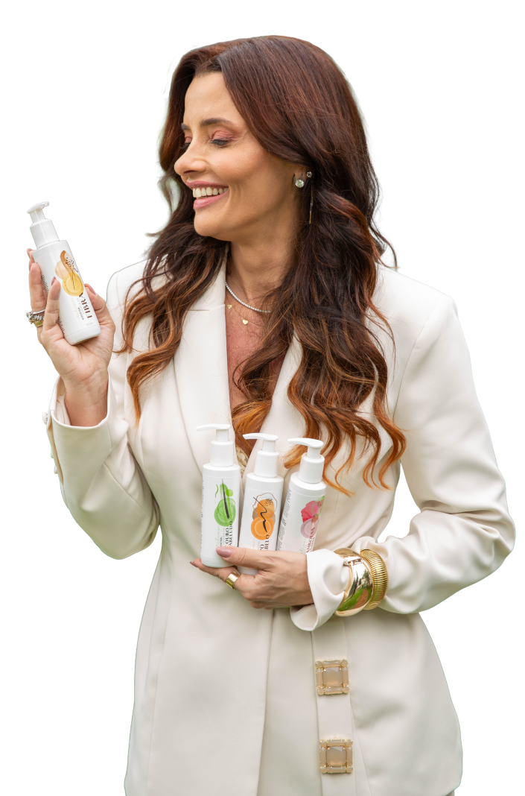
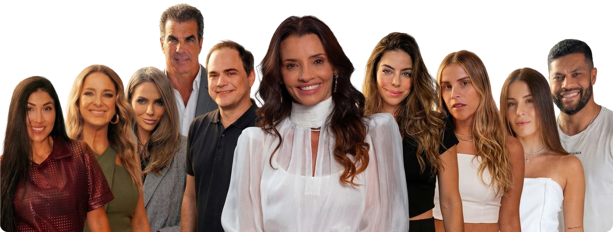

Se você busca mais do que estética e está a procura de resultado, segurança e exclusividade, você está no lugar certo. Aqui, não existe padrão. Existe método, diagnóstico e precisão.
Quero fazer parte do Grupo VIP*Resultados reais com acompanhamento profissional.
Renata Fraga é tricologista e terapeuta capilar, especialista em identificar a causa real dos problemas capilares e criar protocolos personalizados que entregam resultado de verdade. Aqui, não tratamos apenas o fio. Nós acreditamos em um princípio claro: cuidar da raiz do problema, o couro cabeludo.
Diagnóstico preciso do couro cabeludo
Protocolos personalizados
Terapia capilar avançada
Técnicas exclusivas que respeitam a saúde do fio
Resultado? Cabelos mais fortes, saudáveis, com brilho e densidade, e uma autoestima restaurada.

Os protocolos são potencializados com a linha exclusiva Reline, desenvolvida para tratar profundamente a fibra capilar e o couro cabeludo. Porque beleza sem saúde não se sustenta, e aqui, cada produto tem função, estratégia e propósito.
Criamos um GRUPO VIP para quem quer aprender de verdade a cuidar do cabelo, com orientação direta, conteúdo estratégico e acesso a tudo que realmente funciona.
Não é para curiosos.
É para quem quer transformação.
Cuidando de quem é referência, e de quem quer ser também
Quando nomes que vivem sob os holofotes escolhem um profissional, eles buscam mais do que estética: buscam confiança, método e resultado. Renata Fraga já atendeu personalidades e clientes exigentes que entendem que cabelo bonito é couro cabeludo saudável.
